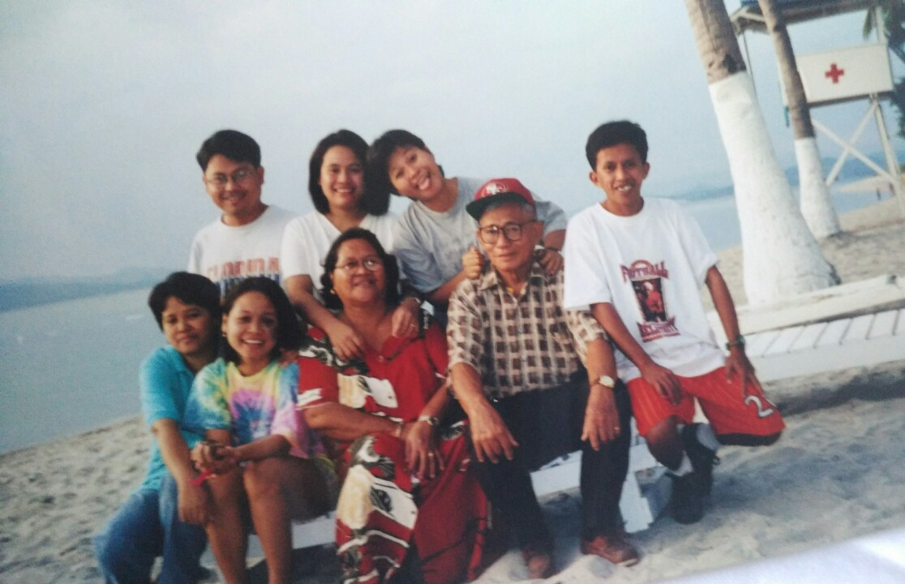

Sunset proves that endings can also hold beauty :
- A promise of rest each day
- "Don't you think the things people are most ashamed of are things they can't help?” ― C.S. Lewis, Till We Have Faces
- Must be a cold world without coffee
Books are people, places, time and many more:

Coffee o'clock-my favorite time of the day: